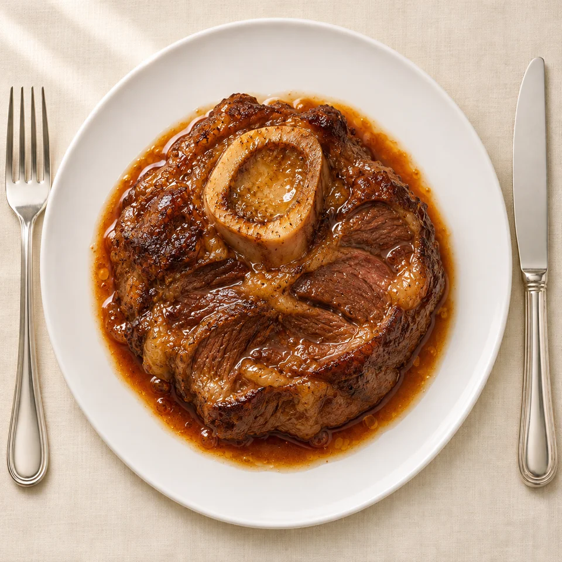

НА КУХНЕ ХИЩНИЦЫ
Говяжья голяшка на кости
Мягкое мясо и костный мозг в насыщенном бульоне.

Что понадобится
- 2 поперечных куска голяшки, около 1 кг
- 500 мл говяжьего бульона
- 20 г топлёного жира
- Соль
Как приготовить
- Обсушите голяшку, посолите и обжарьте с двух сторон.
- Положите в жаровню, влейте бульон до середины высоты мяса.
- Закройте крышкой и томите при 150 °C 3–4 часа, до лёгкого отделения от кости.
- Подавайте с костным мозгом и небольшим количеством уваренного сока.
Удобно готовить накануне: после охлаждения соус становится ещё гуще.
Редакционная адаптация на русском по мотивам рецепта Primal Edge Health. Количество ингредиентов и способ подачи адаптированы. Фотоиллюстрация создана специально для этого рецепта.